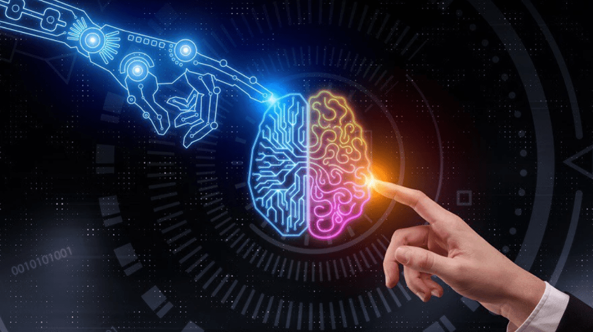
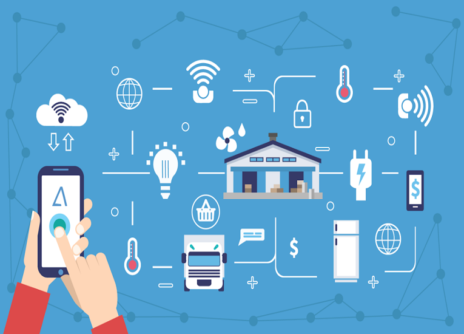
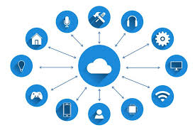
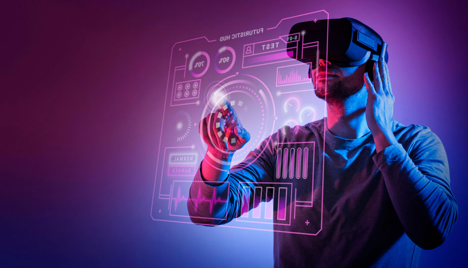

Tecnologías emergentes
A medida que la tecnología avanza, los negocios necesitan implementar continuamente mejoras en
sus sistemas y servicios, pero, ¿Cuáles son estas nuevas tecnologías que compiten en el mercado
actual?
Las tecnologías web han transformado profundamente la sociedad y los negocios en las últimas
décadas. Desde la inteligencia artificial hasta la computación en la nube, estas innovaciones
están cambiando la forma en que vivimos y trabajamos, ofreciendo nuevas oportunidades y
desafíos. A continuación, exploraremos el impacto de algunas de las tecnologías web más
influyentes en el mundo actual.
Inteligencia artificial

Uno de los temas en tendencia de la actualidad, donde los programas que utilizan IA pueden
realizar tareas automaticamente. Esto ha ayudado a muchos negocios ya que con chatbots las
empresas pueden dar información al instante o escalar los temas a los empleados.
Internet de las cosas

Son dispositivos conectados a internet, de uso del hogar o industrial donde los dispositivos pueden
almacenar información, moniterear areas o personas, o realizar acciones como accionar maquinaria o
encender luces, mejorando la producción o automatizando acciones del hogar.
Computación en la nube

Es la práctica donde se utilizan servidores remotos para almacenar, administrar y procesar la
información.
A diferencia de los servidores comunes, donde las compañías también pueden alquilar estos servidores
para levantar su propia infraestructura y paga solamente por lo que usa, esto ha ayudado a que
varios
negocios ahorren en su infraestructura informática.
Ciberseguridad

Una de las mayores inquietudes en esta era de transformación digital, pues mientras más negocios
levantan su infraestructura en linea, algunas de ellas se han vuelto más vulnerables a ataques
informáticos provocando daños financieros. Por ello, la seguridad informática se ha vuelto
algo necesario, donde compañías invierten en infraestructura de seguridad para poder
evitar dichos ataques.
Realidad aumentada y realidad virtual

Actualmente compañías como Meta, buscan crear una mezcla entre estas dos tecnologías para permitir a
las personas interactuar a través de lo que llaman el metaverso, buscando entregar experiencias
inmersivas a los usuarios, sea para entregar información en tiendas virtuales o prototipos de
productos, y así reducir desechos.
Blockchain

Blockchain está revolucionando la forma en que se registran y verifican las transacciones. Su
enfoque descentralizado y distribuido, permite que las transacciones se amacenen a través de varias
computadores de manera que los registros no puedan ser alterados, de esta manera asegurar el manejo
correcto de la información.
Big Data
El análisis de grandes volúmenes de datos permite a las empresas tomar decisiones más informadas y
estratégicas. Big Data está impulsando avances en áreas como la salud, finanzas, y marketing. En la
actualidad, Big Data ha ayudado a empresas como Netflix a identificar patrones entre los usuarios,
permitiendo predecir que le puede gustar al usuario para que así reciba mejores experiencias al
momento de usar la plataforma.
5G

La tecnología 5G promete una conectividad más rápida y confiable, lo que habilita nuevas
aplicaciones
y mejora las existentes. Su implementación impactará a todo el sector empresarial, pues gracias a
esta mejora ámbitos como la medicina, vehículos autónomos o básicamente cualquier dispositivo
electrónico tenga acceso a una velocidad de transferencia de información lo suficientemente rápida
como para manejar grandes cantidades de información en poco tiempo.